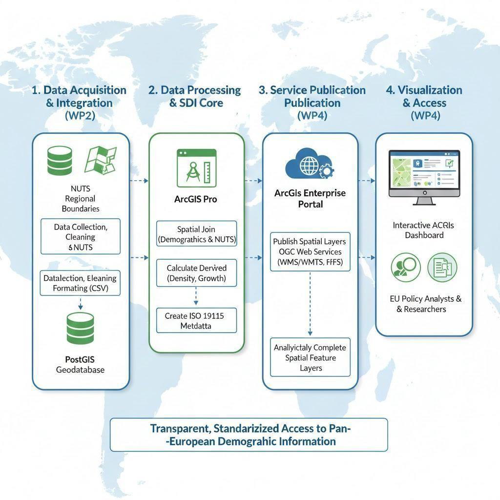
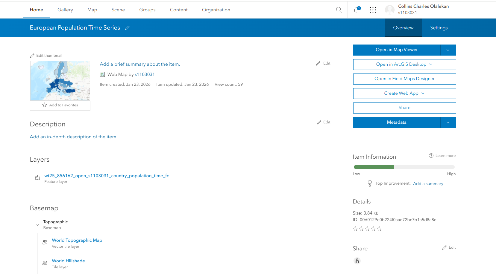
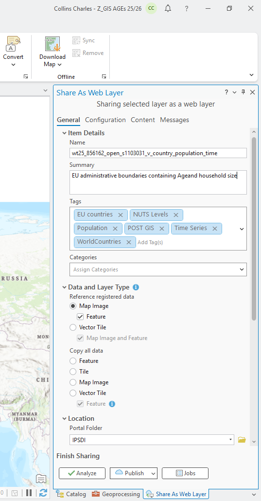

Data Layer
Country boundary geometries were integrated with population time-series information and demographic attributes.
A service-oriented geospatial information system developed to integrate, manage, publish and visualize European population data through standardized spatial data services and an interactive web dashboard.
Population statistics are often distributed as tabular datasets that are separated from their geographic context. This creates difficulties for spatial analysis, data sharing, interoperability and web-based communication.
This project addressed that challenge by designing and implementing a service-oriented Spatial Data Infrastructure that integrates European country boundaries with annual population statistics and demographic attributes.
The resulting system combines spatial data management, metadata, standardized web services and an interactive dashboard within a unified SDI framework.
The ArcGIS Dashboard serves as the primary user-facing component of the SDI. It allows users to explore European population data through maps, indicators, charts and interactive information panels.

The main aim was to design and implement a service-oriented Spatial Data Infrastructure supporting the storage, management, publication and visualization of spatio-temporal European population data.
Integrate European country boundaries and non-spatial demographic datasets into a consistent geospatial data model.
Organize spatial and demographic data using relational and spatial database concepts.
Publish standardized geospatial web services based on Open Geospatial Consortium standards.
Develop an accessible dashboard for exploring spatial and temporal population patterns.
The project separates data management, spatial processing, service publication and visualization into connected components. This supports interoperability, maintainability and reuse.

Country boundary geometries were integrated with population time-series information and demographic attributes.
ArcGIS Enterprise provided centralized publication and management of spatial services, including OGC-compliant WMS and WFS services.
ArcGIS Dashboards provided the final interactive interface through which users could explore maps, charts and demographic indicators.
Spatial and non-spatial datasets were harmonized using common country identifiers and temporal attributes. Processing included data cleaning, attribute normalization, temporal restructuring, spatial joins, geometry validation and preparation for web-service publication.
European boundary and demographic datasets were collected from relevant sources.
Population tables, identifiers and temporal fields were standardized.
Country geometries and demographic attributes were combined using spatial and relational methods.
Prepared spatial layers were published through ArcGIS Enterprise services.
Published services were consumed by interactive web maps and dashboards.
ArcGIS Pro was used to prepare and publish spatial layers to the enterprise environment.
Before publication, datasets were checked for valid geometries, attribute structure, object identifiers and service compatibility.
This stage transformed processed desktop GIS datasets into reusable spatial information resources that could be consumed by web applications.


Web Map Service (WMS) was used to provide standardized map visualization, allowing thematic population maps to be viewed consistently across compatible clients.
Web Feature Service (WFS) provided feature-level access to spatial geometries and their demographic attributes, supporting querying, filtering and reuse.
Metadata was treated as a core SDI component rather than an optional documentation step. Records documented dataset identification, spatial and temporal extent, lineage, quality, constraints and distribution information.
Metadata documentation followed ISO 19115 and ISO 19139 principles, supporting future discovery, evaluation and reuse of the spatial information resources.
The dashboard transforms standardized SDI services into an accessible visual interface that can be explored by users without requiring specialist GIS software.
Country-level choropleth mapping provides geographic context for European population patterns.
A headline indicator summarizes the population value corresponding to the active selection.
Bar charts support comparison of population values between European countries.
Tables and charts provide additional information on years and demographic characteristics.
The dashboard was designed so that selections made in one component influence other visual elements. Country, year and attribute selections can therefore update the corresponding map, charts, indicators and information panels.
European spatial boundaries and demographic information were transformed into consistent spatio-temporal datasets.
Population layers were exposed through interoperable service interfaces including WMS and WFS.
The technical SDI backend was connected to an intuitive visual interface for spatial communication.
ISO-oriented metadata, lineage and data-quality information improved transparency and usability.
Separation of data, services and user interfaces supports maintainability and future expansion.
Population information was transformed from fragmented datasets into accessible spatial knowledge.
This project strengthened my understanding of how a Spatial Data Infrastructure extends beyond creating maps. It requires careful consideration of data organization, database structure, metadata, interoperability, standardized services and user communication.
As Project Lead, I also developed experience in coordinating technical tasks, documentation, milestones and collaborative project delivery.
The project demonstrated how geospatial services can connect enterprise data management with accessible web-based visualization, allowing complex demographic information to be shared with both technical and non-technical users.
← Back to Projects